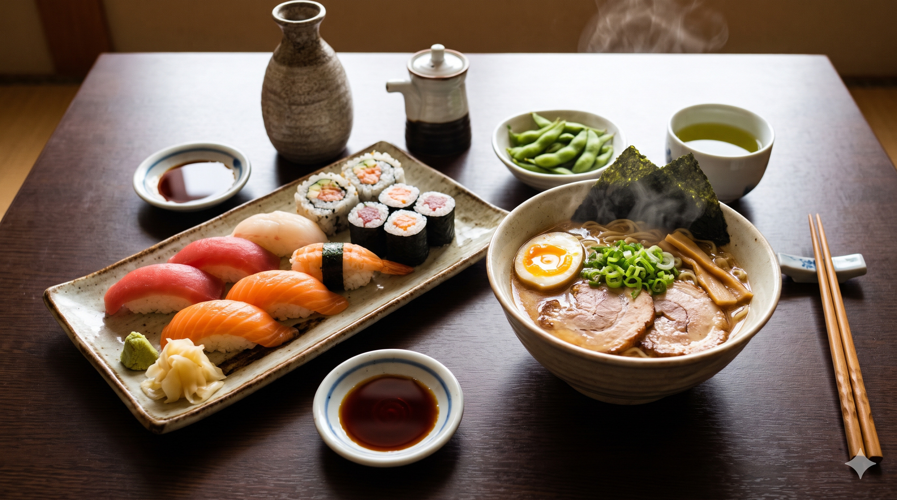
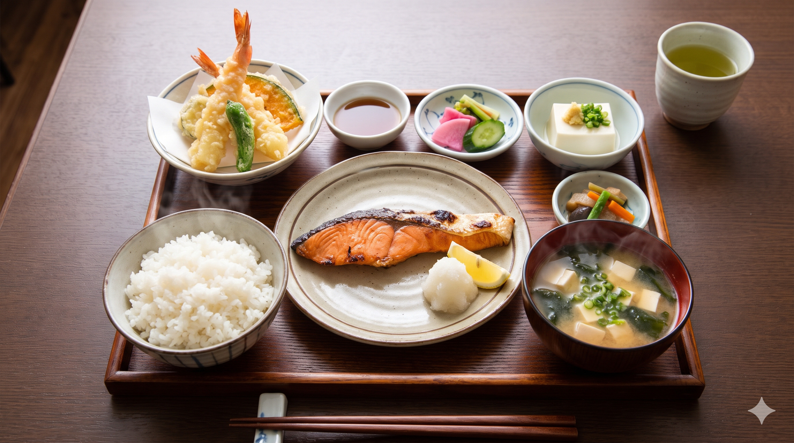
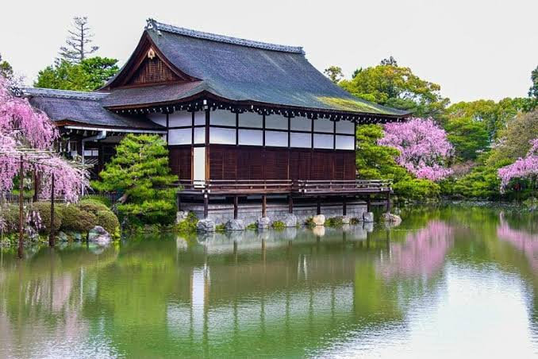
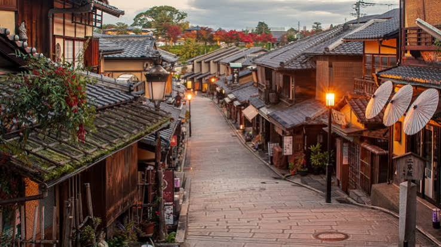
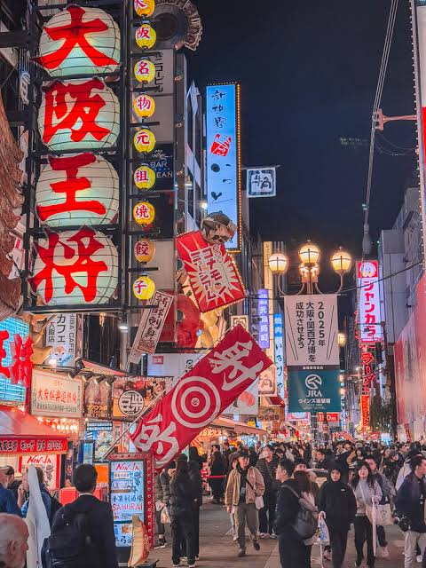
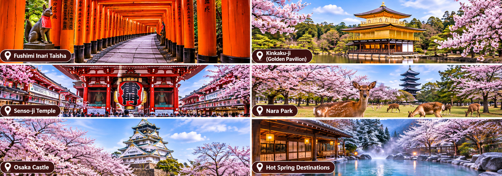

05. Food & Lifestyle
Explore Japanese dining favorites, traditional dishes, homes, and popular animation such as Shinchan and Naruto.

Sushi and Ramen
Sushi combines seasoned vinegared rice with fresh fish, seafood, or vegetables in styles like nigiri and maki. Ramen features wheat noodles served in rich broths—such as soy sauce, miso, salt, or pork bone—topped with chashu, scallions, nori, and seasoned egg.

Traditional Japanese Food
Traditional Japanese cuisine (Washoku) balances steamed rice, miso soup, grilled fish, seasonal vegetables, tofu, and pickles. Popular classics include crispy Tempura, comforting Udon and Soba noodles, Matcha tea, and seasonal wagashi sweets.

Japanese Homes
Japanese homes remove outdoor shoes at the entrance (genkan) and keep living areas tidy and organized. Traditional rooms feature woven Tatami mats, sliding shoji or fusuma doors, low tables, and foldable Futon bedding, while modern apartments focus on smart space use.
Shinchan Cartoon
Shinchan (Crayon Shin-chan) is a classic Japanese comedy series created by Yoshito Usui, centered on a mischievous five-year-old boy and everyday family life in Kasukabe. It captures lighthearted household routines, school friends, and neighborhood humor.
Anime 2: Naruto
Naruto is one of the world's most popular Japanese anime and manga series, following young ninja Naruto Uzumaki from the Hidden Leaf Village (Konohagakure) as he trains, builds lasting friendships, overcomes challenges, and works toward his dream of becoming Hokage.
06. Explore Japan
Discover iconic places across Japan including Mount Fuji, Tokyo, Kyoto, Osaka, and famous tourist attractions.
Mount Fuji
Standing 3,776 meters tall, Mount Fuji is Japan's highest mountain and an iconic volcanic peak. Viewable from nearby lakes, towns, and scenic viewpoints, it symbolizes natural beauty across every season.
Tokyo
Tokyo is Japan's energetic capital city, blending futuristic skyscrapers, shopping districts, and anime culture with peaceful historic shrines and quiet residential streets.

Kyoto
Kyoto is celebrated for preserving traditional Japan with thousands of temples and shrines, wooden streets, tea houses, bamboo paths, and classical gardens.

Osaka
Osaka is a lively city known for friendly locals, street food specialties like takoyaki and okonomiyaki, Osaka Castle, and energetic nightlife districts.

Famous Tourist Attractions
Famous tourist attractions across Japan include Fushimi Inari Taisha with its rows of torii gates, Kinkaku-ji (Golden Pavilion), Senso-ji Temple in Asakusa, Nara Park, Osaka Castle, and scenic hot spring destinations.
Audio & PDF Resources
Listen to the audio file or open the audio link and PDF file link below.